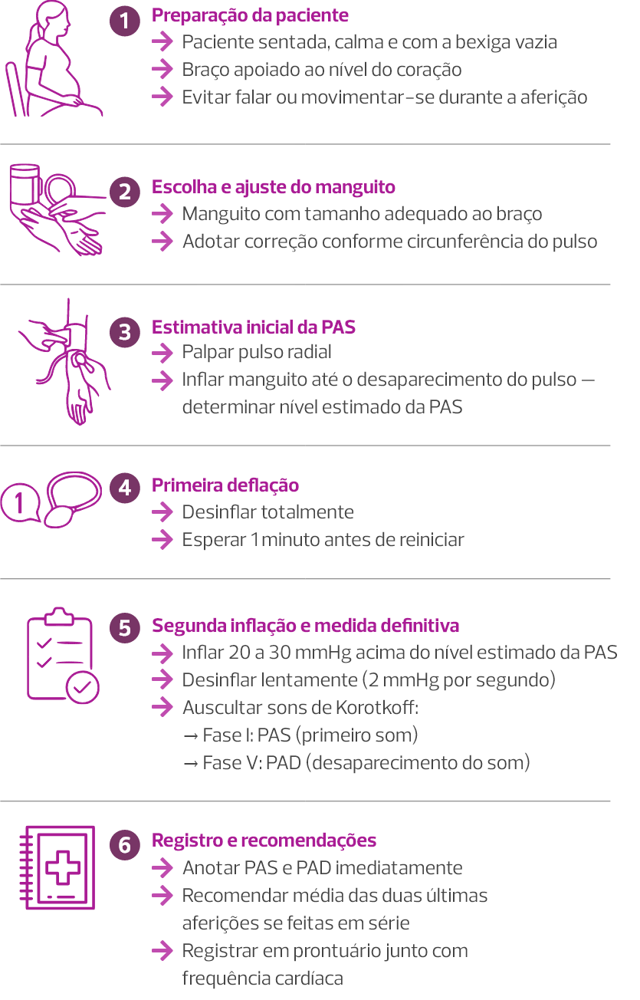

Aula 1
Síndromes hipertensivas: epidemiologia, diagnóstico e
classificação
Introdução
O reconhecimento precoce da pré-eclâmpsia é a estratégia mais importante para a prevenção de casos mais graves. Essa condição é potencialmente detectável durante o pré-natal. Portanto, o componente pré-hospitalar tem ênfase muito grande nas informações aqui apresentadas.
Mortalidade materna e hipertensão no Brasil
O Brasil tem grande dificuldade em reduzir a mortalidade materna, principalmente por hipertensão. As síndromes hipertensivas se mantêm como a principal causa de morte materna ao longo dos anos, com uma redução que não tem sido alcançada, mesmo com os vários esforços que têm sido implementados.
Dados de 2023 do Ministério da Saúde mostram que a maioria das mortes maternas por hipertensão como causa obstétrica direta é de mulheres negras (pretas e pardas), com 58,5% das mortes de mulheres pardas e 10,57% de mulheres pretas.
> Near miss gestacional e impacto na assistência
Estudos multicêntricos nacionais têm demonstrado a importância do reconhecimento e análise da morbidade materna grave (near miss gestacional). Essa análise auxilia as equipes a entenderem por que a gestante/puérpera não morreu, mesmo tendo adoecido de maneira significativa. Também avalia se a morte não ocorreu devido a alguma intervenção que foi adotada oportunamente ou mesmo por acaso.
A hipertensão tem se apresentado como uma causa muito frequente de morbidade materna grave entre as mulheres brasileiras, deixando por vezes sequelas definitivas.
A prematuridade eletiva e suas potenciais sequelas e prejuízos à saúde das crianças ocorre devido à necessidade de interrupção da gestação motivada por repercussões clínicas maternas de diversas patologias que intercorrem na gestação. Nesse contexto, as síndromes hipertensivas se apresentam como o principal grupo de causas motivando interrupções eletivas precoces e determinando prematuridade.
É muito importante ampliar as informações relacionadas às síndromes hipertensivas, principalmente no terceiro trimestre da gestação. O objetivo é contribuir para que as pacientes reconheçam o momento de procurar o hospital, ou seja, quando os sinais de alarme estiverem presentes. Portanto, sintomas como cefaleia, epigastralgia, escotomas e turvações visuais, tonteira, mal-estar, dor torácica e dispneia súbita, mesmo que por vezes inespecíficos, devem ser assimilados e reconhecidos. A ação internacional promovida pela Preeclampsia Foundation é um dos esforços mundiais vigentes nesse momento que serve como um bom exemplo de estratégia de fortalecimento da comunicação entre as equipes assistenciais, gestantes e puérperas.
A assistência pré-natal de qualidade é ação de suma importância na prevenção de mortes maternas por síndromes hipertensivas, pois esse grupo de causa antecede ou se manifesta no curso da gestação. Portanto, nos remetemos ao professor Camano, que preconizava a realização do pré-natal de maneira dinâmica e com decisões oportunas, entendendo que a gestante tem modificadas suas condições clínicas ao longo da gravidez, de modo fisiológico. Cabe a nós estarmos atentos e diagnosticar quaisquer alterações, que podem acontecer subitamente.
> Interação materno-fetal e evolução da PA
Do ponto de vista imunológico, a gravidez representa uma interação dinâmica entre a gestante e o feto. Quando essa interação materno-fetal ocorre de maneira fisiológica, por intermédio de produto de concepção oriundo da junção de gametas, a evolução terá um padrão normal, favorecendo até uma possível queda da pressão arterial (PA) na segunda metade da gravidez. Por outro lado, quando essa interação acontece de maneira inadequada, a PA se eleva. Esse processo ainda apresenta várias lacunas para o seu conhecimento exato. Uma elevação da PA a partir da segunda metade da gravidez, principalmente em pacientes previamente normotensas, é indicativa de desenvolvimento de pré-eclâmpsia, e deve sempre ser detectada pela equipe assistencial.
O estudo da fisiopatologia da pré-eclâmpsia permite compreender como a interação materno-fetal pode acontecer de modo bastante intenso e desfavorável. O aumento da permeabilidade capilar promove edema.
O edema anormal é aquele que acomete face, mãos e regiões suprapúbica e sacral. Esse edema provoca aumento médio de um quilo por semana na gestante, e é denominado edema oculto. Entretanto, a ausência de edema não exclui a possibilidade de pré-eclâmpsia.
O vasoespasmo, típico dessa patologia, é o evento responsável pelo quadro de hipertensão, e se apresenta como um forte marcador de pré-eclâmpsia. Além disso, essas gestantes têm tendência à ativação de seus sistemas de coagulação, podendo evoluir com complicações graves oriundas da coagulopatia. Considerando a diversidade dos casos clínicos, podemos encontrar pacientes com:
- Edema importante (incluindo ascite), mas com PA de 140 X 90 mmHg.
- Edema pré-tibial com PA de 220 X 130 mmHg, que é categorizado como uma cruz (1+).
-
Menos de 40.000 plaquetas por mm³ e PA de 140 X 90 mmHg.
Não é necessário esperar a presença simultânea de todos os sinais e sintomas para classificar a gestante como portadora de pré-eclâmpsia e instituir medidas efetivas. Considerando que essa é uma doença que se manifesta após a 20ª semana, mas que começa desde a implantação trofoblástica e possui diversidade no surgimento dos sinais e sintomas, podemos afirmar que a pré-eclâmpsia é uma doença de expressão clínica crônica, heterogênea e sistêmica.
Nessa interação de processos fisiopatológicos predomina o caráter dinâmico dessa doença. Hoje, a gestante pode apresentar-se estável e sem intercorrências, mas amanhã pode desenvolver um quadro grave de pré-eclâmpsia. Portanto, essa dinamicidade exige muito conhecimento clínico da equipe assistencial, que deve estar sempre atenta às modificações que podem surgir inesperadamente.
Técnica de aferição da pressão arterial
> Interação materno-fetal e evolução da PA
É muito importante reconhecer a relevância da aferição da PA com a técnica adequada, pois é justamente esse passo que vai desencadear uma série de ações de triagem que culminarão na classificação da paciente.
Veja a seguir o passo a passo para aferição correta da pressão arterial (PA) em gestante.
Passo a passo para a aferição correta da PA em gestantes
Uma pesquisa realizada no Brasil investigou possíveis diferenças entre valores de PA aferidos sem e com adoção de diretrizes padronizadas (Diretrizes Brasileiras de Hipertensão, 2010). Foi encontrada disparidade de 87% entre a primeira (rotineira) e a segunda (padronizada) aferições, reforçando a importância do treinamento das equipes e da adoção das diretrizes nacionais.
> Posições e valores pressóricos
A posição da gestante tem um efeito muito importante na aferição da PA e nos valores de aferição. Os menores valores são encontrados no decúbito lateral esquerdo, seguido pelo decúbito dorsal e pela posição semissentada (posição Fowler). Os maiores valores são encontrados na posição sentada.
Posição Fowler
No decúbito lateral esquerdo a PA se encontra reduzida. Entretanto, isso não reflete as condições naturais dos níveis pressóricos.
Deitar a gestante em decúbito lateral esquerdo é uma atitude terapêutica que deve ser incluída na conduta inicial das crises hipertensivas. Para o diagnóstico de hipertensão a aferição deve ser realizada com a paciente sentada, pois essa é a posição que apresenta os maiores valores e a condição mais próxima do seu cotidiano.
A compressão vascular também influencia a ausculta. Insuflação excessiva do braço favorece o encontro de níveis pressóricos anormais, determinados pela hiperinsuflação. Portanto, a padronização de primeiro estimar a PAS para depois insuflar 20 a 30 mmHg acima do valor encontrado é sempre recomendável.
Além dos aspectos já enfatizados, o roteiro de orientações para monitorização da PA durante a consulta pré-natal também inclui o uso de aparelhos validados para uso na gestação, aferição por três vezes com intervalos de um a dois minutos, cálculo da média das duas últimas leituras, realização de medições adicionais diante de leituras com diferenças superiores a 10 mmHg, aferição da PA nos dois braços na primeira consulta, registro concomitante da frequência cardíaca e descarte de arritmia por palpação do pulso.
Aparelhos de medição instalados no pulso devem ser evitados.
> Orientações para aferições fora do ambiente hospitalar
O roteiro de orientações para monitorização ambulatorial contínua (na residência) da PA inclui:
- Uso de dispositivo validado.
- Registro da PA em intervalos de 15 a 30 minutos.
- Mínimo de 70% de registros de PA utilizáveis.
-
Elaboração de um diário com as anotações das atividades da gestante (ingestão dos medicamentos e horário de sono).
Obs.: o roteiro de orientações para monitorização residencial da PA ainda inclui obtenção de leituras duas vezes ao dia (manhã e noite) por pelo menos três e, idealmente, sete dias.
É de suma importância que as unidades de saúde utilizando aparelhos automáticos priorizem dispositivos validados para a gestação, pois nem todos são adequados para aferição da PA em gestantes.
Se apenas reconhecermos o estado hipertensivo, não ofereceremos cuidados integrais às gestantes com hipertensão. Reconhecer sinais de gravidade, tais como níveis pressóricos ≥ 160 X 110 mmHg, epigastralgia, distúrbios visuais, dispneia, entre outros, é imprescindível, pois a presença destes determina a necessidade de medidas adicionais à redução isolada da PA.
Estado hipertensivo
> Critérios diagnósticos
Após o reconhecimento do estado hipertensivo, toda a atenção deve ser dada à classificação da síndrome hipertensiva. A classificação clássica dos anos 2000 estratifica a gravidez no início (“zero” semanas), na 20ª semana, na data de ocorrência do parto e no período de 12 semanas após o parto.
Essa classificação não preconiza o uso da sigla “DHEG“ (doença hipertensiva específica da gestação). Também não é obrigatória a presença de edema para instituir diagnósticos. Então, a classificação adota os seguintes critérios diagnósticos:
Se o estado hipertensivo se iniciar antes da gravidez ou antes da 20ª semana e não desaparecer no pós-parto (sem limitação de tempo), a condição clínica é hipertensão arterial crônica.
Se o estado hipertensivo se iniciar após a 20ª semana e se encerrar até a 12ª semana pós-parto, com proteinúria negativa ou não significativa, a condição é hipertensão gestacional tardia. Esta não deve ser considerada condição benigna, porque pode ser uma pré-eclâmpsia que ainda não tem proteinúria significativa ou uma hipertensão arterial crônica sem informações relacionadas ao pré-natal.
Se o estado hipertensivo se iniciar após a 20ª semana e se encerrar até a 12ª semana pós-parto, porém acompanhado de proteinúria significativa (duas ou mais cruzes na fita; relação proteinúria/creatinúria ≥ 0,3), devemos considerar que é uma pré-eclâmpsia. Esse limite rígido de início na 20ª semana e encerramento na 12ª semana pós-parto necessita de observação crítica, pois as evoluções são dinâmicas e existem algumas situações mais raras que podem induzir pré-eclâmpsia antes da 20ª semana de gestação, tais como doença trofoblástica gestacional, gemelaridade e trombofilias. Cerca de 30% das gestantes hipertensas crônicas evoluem com pré-eclâmpsia sobreposta, o que piora muito o prognóstico. Os casos mais graves de pré-eclâmpsia acontecem entre 28 e 32 semanas. Por isso, as gestantes com fatores de risco previamente identificados precisam ser orientadas a aferir a PA pelo menos uma vez por semana nesse período, assim como se atentarem para o surgimento de sinais de alerta e buscarem atendimento imediato na presença destes.
Na prática clínica nem sempre é fácil reconhecer o estado hipertensivo, pois no início da gestação ocorre uma redução da resistência vascular periférica de até 30%. Isso determina redução da PA entre a 16ª e 18ª semana, com retorno aos níveis pré-gravídicos no terceiro trimestre. Entre as gestantes previamente hipertensas, 10% “normalizam” a PA, reduzindo-se desde o início da gestação, mesmo sem tratamento. Essa evolução pode determinar uma redução de até 20 mmHg na PAD. Portanto, se essa redução esperada da PA não acontecer, deve-se suspeitar da ocorrência de pré-eclâmpsia.
O ideal é o conhecimento dos níveis pressóricos antes da gestação. O desafio é que nem sempre isso é possível. Além disso, muitas vezes a PA será subestimada quando o valor que temos para tomar decisões foi oriundo de uma autoaferição.
> Novos critérios laboratoriais e clínicos
Tradicionalmente, o padrão ouro para o diagnóstico de pré-eclâmpsia era a ocorrência de proteinúria significativa. Entretanto, desde 2013 diversas publicações e diretrizes passaram a recomendar o diagnóstico da pré-eclâmpsia na ausência de proteinúria significativa, mediante a presença de outros critérios indicativos de deterioração. Desde então, os sintomas clínicos e os resultados de exames laboratoriais passaram a integrar o conceito dessa doença, enfatizando a atenção para as queixas, exame físico minucioso e dados laboratoriais. Estes passaram a integrar a classificação, valorizando a escuta ativa e a atenção da equipe aos detalhes dos casos, objetivando o diagnóstico precoce e, evidentemente, a instituição de medidas oportunas.
Em 2023, a Rede Brasileira de Estudos sobre Hipertensão na Gravidez passou a adotar os critérios apresentados acima. Sendo assim, diante de um quadro de hipertensão iniciado na segunda metade da gravidez e acompanhado de proteinúria significativa, devemos diagnosticar pré-eclâmpsia. Entretanto, na ausência de proteinúria, a presença de trombocitopenia com contagem plaquetária ≤ 150.000/mm³, dosagem de transaminase oxalacética (TGO) ≥ 40 unidades por litro, comprometimento renal com a creatinina ≥ 1, e presença de edema agudo de pulmão, ou mesmo de sinais sugestivos de acometimento dos órgãos-alvo ou de insuficiência placentária, são atualmente considerados critérios diagnósticos de pré-eclâmpsia.
Portanto, podemos observar que apenas três exames necessitam ser solicitados para o diagnóstico da pré-eclâmpsia:

Contagem de plaquetas (hemograma)
Dosagem de uma das transaminases (a TGO)

Creatinina
> Época de instalação e prognóstico
A época de instalação da pré-eclâmpsia é muito importante para inferir seu prognóstico. Veja a seguir.
Pré-eclâmpsia
precoce
Antes de 34
semanas
Pré-eclâmpsia
tardia
A partir de
34 semanas
A possibilidade de etiologias diferentes para as duas categorias já foi aventada, mas essa hipótese não tem sido mais aceita. Sabe-se que esses dois subtipos de pré-eclâmpsia apresentam adaptações hemodinâmicas diferentes, que serão detalhadas em outro momento.
Devemos evitar classificar e denominar essa doença como "leve“ (não existe pré-eclâmpsia leve), pois uma diferença entre uma doença hipertensiva grave ou leve pode confundir.
Também devemos ressaltar que a pré-eclâmpsia não é só o aumento da PA, pois existem alterações sistêmicas envolvendo a condição fisiopatológica. O alvo do tratamento não deve ser apenas a redução do estado hipertensivo, mas a compensação clínica, a classificação quanto a época de instalação, assim como a indicação do parto no momento oportuno. Durante as atividades de um plantão, a equipe pode considerar que determinada paciente é mais grave do que outra. Também devemos sempre entender que o percurso dinâmico desse problema pode nos surpreender: uma paciente estável pode rapidamente desenvolver uma doença grave.
Biomarcadores e avaliação complementar
> Papel dos biomarcadores
Quando disponíveis, os biomarcadores podem ser utilizados para o esclarecimento de dúvidas diagnósticas. Biomarcadores são substâncias que demonstram, do ponto de vista sérico, que houve angiogênese adequada em detrimento da antiangiogênese. Essa informação está aqui apresentada a título de conhecimento, pois essa tecnologia não se encontra amplamente difundida.
Os biomarcadores soluble fms-like tyrosine kinase-1 (sFlt-1) e placental growth fator podem ser úteis e aplicáveis a partir de 20 semanas para a definição diagnóstica de pré-eclâmpsia e esclarecimento de dúvidas. Por exemplo, uma paciente com história pregressa de hipertensão arterial crônica e pré-eclâmpsia na gestação anterior, e que atualmente se encontra grávida e evoluindo com descontrole pressórico, pode se beneficiar dessa estratégia, pois frequentemente a avaliação isolada da sua PA não será suficiente para definirmos a classificação de sua síndrome hipertensiva. Ressalta-se que doenças renais e diabetes mellitus preexistentes também podem apresentar proteinúria desde o início da gestação, também se apresentando como fatores de confusão. Na ausência de biomarcadores, a deterioração clínica e/ou laboratorial da paciente, assim como a presença dos critérios de gravidade, são suficientes para o diagnóstico de pré-eclâmpsia.
Os biomarcadores possuem o papel principal de colaborar para dirimir dúvidas em casos individualizados, obviamente se estiverem disponíveis.
Outro recurso propedêutico aplicável na pré-eclâmpsia é o doppler da artéria oftálmica. O exame exige ultrassonografia e profissional capacitado, não sendo de fácil acesso e aplicabilidade. A insonação da artéria oftálmica é realizada pela pálpebra superior e o estudo de seu fluxo permite definir a presença de vasodilatação no cérebro e obstruções vasculares. Portanto, o exame permite o diagnóstico diferencial entre hipertensão crônica e pré-eclâmpsia, assim como a avaliação da gravidade desta.
Estratégias de manejo
Com o objetivo de estabelecer as etapas mais adequadas e oportunas para intervenções efetivas na pré-eclâmpsia, a Rede Brasileira de Estudos sobre Hipertensão na Gravidez (2023) elaborou a regra mnemônica dos 4 Ps, que são:
- Prevenção adequada.
- Pré-natal atento.
- Parto oportuno.
-
Puerpério seguro.
A prevenção secundária da pré-eclâmpsia preconiza o uso de AAS (ácido acetilsalicílico, 100 mg a noite; iniciar na 12ª semana — podendo ser iniciada até a 20ª semana — usar até a 36ª semana) e suplementação de cálcio (1° trimestre ao final da gestação; carbonato de cálcio 1 a 2 g/ dia ou citrato de cálcio 2 a 4 g/ dia; doses fracionadas de 500 mg) para gestantes de risco.
Na atenção pré-natal são fundamentais aferição correta da PA, assim como rastreamento clínico contínuo, suspeição e diagnóstico precoce da pré-eclâmpsia. Diante do diagnóstico de pré-eclâmpsia, a internação é muito útil e tem o objetivo de manter a paciente sob vigilância clínica e laboratorial. O controle pressórico por meio de hipotensores tem como meta manter a PAD entre 80 e 85 mmHg. Na crise hipertensiva devem ser utilizados hipotensores de ação rápida.
Clique aqui e saiba mais sobre a nota técnica conjunta nº 251/2024 do Ministério da Saúde criada para estabelecer a suplementação universal de cálcio para gestantes.
O gerenciamento do parto é de suma importância, aqui referenciado como parto oportuno. Os quadros estáveis de pré-eclâmpsia podem permanecer sob vigilância clínica e laboratorial até 37 semanas gestacionais. Já os casos de pré-eclâmpsia com sinais de deterioração necessitam de antecipação do parto e do uso de sulfato de magnésio, se presentes crise hipertensiva, iminência de eclâmpsia, eclâmpsia e síndrome HELLP.
O sulfato de magnésio não deve ser prescrito apenas para uso hospitalar. Sua prescrição está indicada desde o atendimento realizado na unidade básica de saúde. Deve haver segurança do transporte da paciente e subsequente manutenção do uso intra-hospitalar, o que exige uma rede assistencial organizada.
Existem recursos para auxiliar na decisão do melhor momento do parto na pré-eclâmpsia.
São utilizados parâmetros clínicos e laboratoriais para o estabelecimento de critérios auxiliares na decisão quanto ao melhor momento de interrupção da gestação. Portanto, no atendimento a portadoras de pré-eclâmpsia, é imprescindível o acesso a exames laboratoriais, tais como transaminases, creatinina, plaquetas entre outros, permitindo o diagnóstico precoce da síndrome HELLP e a identificação da gravidade da pré-eclâmpsia.
A cardiotocografia está indicada para a avaliação inicial da saúde fetal. Quando disponível, a dopplervelocimetria otimiza o estudo da vitalidade fetal, permitindo melhor compreensão do comprometimento de sua vitalidade e de sua restrição, e identificando o melhor momento para interrupção da gestação. Se não houver vitalidade fetal adequada, não há vantagem em prosseguir com a gravidez. A gravidez na pré-eclâmpsia só deve ser mantida por motivos fetais. Portanto, se não há benefícios na manutenção intrauterina do feto, podemos afirmar que cinco minutos de pré-eclâmpsia não são nem um pouco vantajosos para a gestante. Nas gestações entre 24 e 34 semanas, a corticoprofilaxia antenatal deve ser instituída.
A mortalidade materna também ocorre no puerpério. Portanto, a dequitação placentária não deve determinar a redução dos cuidados. Contrariamente, a puérpera pode descompensar mesmo após a extração fetal, quase sempre exigindo continuidade de uso de sulfato de magnésio e de hipotensores de ação rápida.
A alta hospitalar exige estabilidade clínica, podendo ultrapassar 72 horas. Informações claras e objetivas devem ser oferecidas à puérpera, incluindo sinais de alerta para retorno ao hospital.
Os aspectos de longo prazo relacionados à pré-eclâmpsia também merecem ser discutidos, pois muitas pacientes apresentarão repercussões clínicas futuras passíveis de danos, tais como doenças cardiovasculares, danos renais e menor expectativa de vida. Portanto, a compreensão desses riscos e a adoção de um estilo de vida saudável são úteis para prevenir os desfechos relacionados. Além disso, contracepção segura e adequada deve ser oferecida e acessível, permitindo melhor planejamento de futuras gestações.
Apesar do cenário de tratamento ser predominantemente o hospital, o diagnóstico precoce faz diferença nos resultados que pretendemos obter. O momento ideal para o diagnóstico da pré-eclâmpsia é o atendimento pré-natal, pois, assim sendo, as intervenções podem ser iniciadas precocemente. Então, finalizamos esta apresentação nos remetendo à frase do professor Nelson Sass: “O pré-natal reconhece precocemente a instalação clínica da pré-eclâmpsia e permite interceptar processos potencialmente fatais.”
Você concluiu esta aula, continue se empenhando nos seus estudos. Siga para a próxima aula!